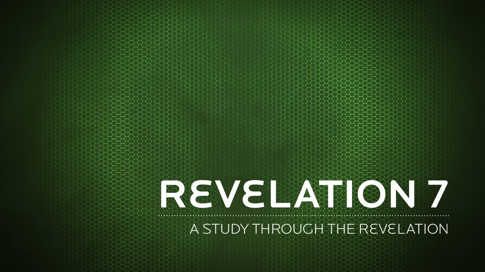

"Do not be afraid. I am the First and the Last. I am the Living One; I was dead, and now look, I am alive for ever and ever! And I hold the keys of death and Hades.
Revelation 1:17-18 NIV
They will neither hunger nor thirst, nor will the desert heat or the sun beat down on them. He who has compassion on them will guide them and lead them beside springs of water.
Isaiah 49:10 NIV
The Apocalypse is the work of a creative artist and must not be pressed into a clearly defined plan
G.K. Beale